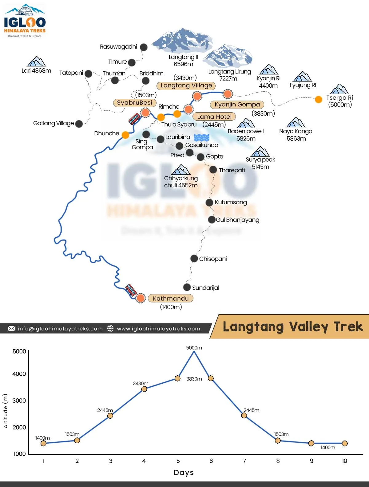
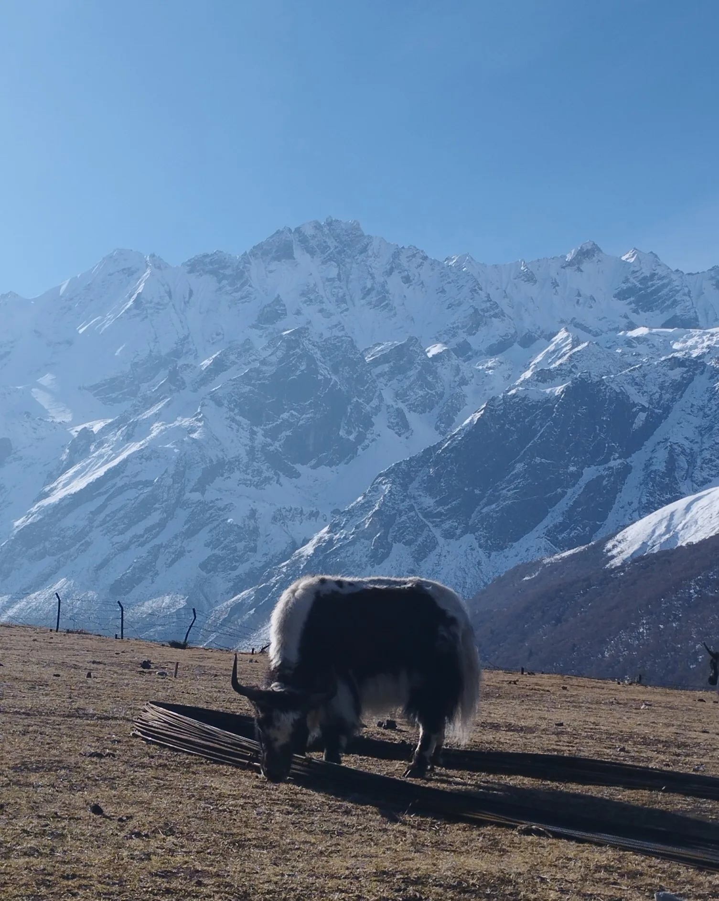
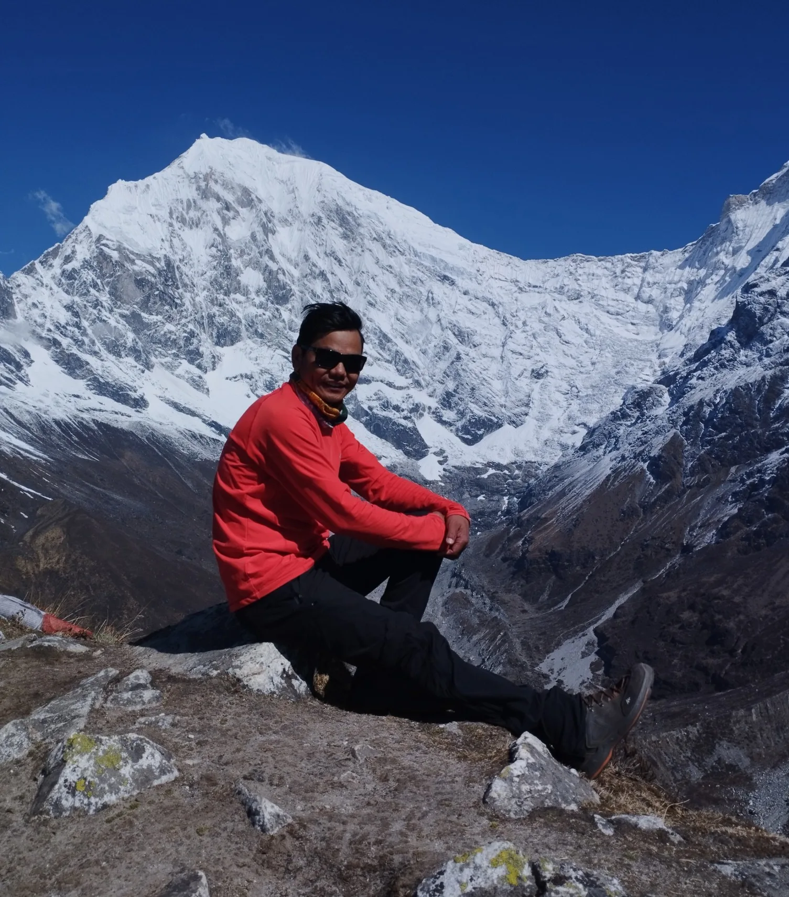
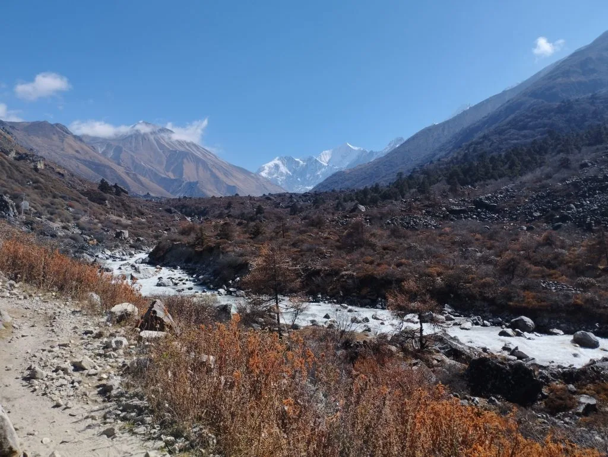
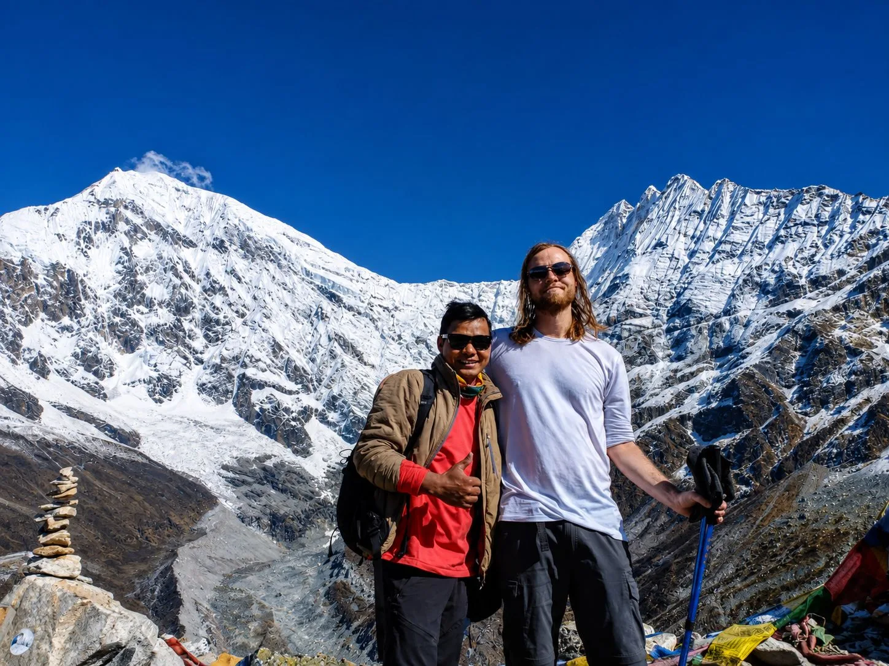

1. Official Difficulty Grade: Why Langtang Is Rated 'Moderate'
In the spectrum of Himalayan trekking, the Langtang Valley Trek is officially rated as MODERATE. It sits comfortably between gentle foothill walks (like Ghorepani Poon Hill) and grueling, multi-week glaciated expeditions (like the Everest Three Passes or Manaslu Circuit).
To understand what "moderate" means in practice, we break down the four core difficulty dimensions:
Technical Difficulty (1 / 5)
- Zero Technical Climbing: The entire standard route is a walkable footpath consisting of stone steps, packed earth, and glacial moraines.
- No ropes, crampons, harnesses, ice axes, or mountaineering boots are needed.
- No treacherous glacier crevasse crossings or sheer vertical cliff exposure.
Altitude Challenge (3.5 / 5)
- Maximum sleeping altitude is 3,870 meters (12,697ft) at Kyanjin Gompa.
- Summit day pushes to 4,773m (Kyanjin Ri) or 4,984m (Tserko Ri).
- Effective oxygen drops to ~64% at Kyanjin Gompa and ~55% on Tserko Ri.
2. Master Day-by-Day Difficulty Matrix: Distances, Elevation Gains & Hours

Understanding the demands of each individual day allows you to pace your energy and prepare mentally for the toughest stretches:
| Day & Route Segment | Distance | Elevation Gain / Loss | Hiking Hours | Terrain & Difficulty Rating |
|---|---|---|---|---|
| Day 01: Kathmandu to Syabrubesi | 122 km (Drive) | 1,400m → 1,503m (+103m) | 6 – 7 hrs drive | Moderate: Bumpy mountain road; road curves |
| Day 02: Syabrubesi to Lama Hotel | 11.5 km | 1,503m → 2,470m (+967m) | 5.5 hours | Strenuous: Sustained stone stair climb in forest |
| Day 03: Lama Hotel to Langtang Village | 14.8 km | 2,470m → 3,430m (+960m) | 6 hours | Moderate-Strenuous: Steady uphill; thinning air |
| Day 04: Langtang to Kyanjin Gompa | 6.5 km | 3,430m → 3,870m (+440m) | 3.5 hours | Easy-Moderate: Gentle high-alpine walk; short day |
| Day 05: Kyanjin Ri / Tserko Ri Summit | 6 – 14 km | 3,870m ↔ 4,773m / 4,984m | 4 – 8 hours | Challenging: Steep scree, thin air, sub-zero wind |
| Day 06: Kyanjin Gompa to Lama Hotel | 21.3 km | 3,870m → 2,470m (-1,400m) | 6 hours | Moderate: Long distance downhill; knee impact |
| Day 07: Lama Hotel to Syabrubesi | 11.5 km | 2,470m → 1,503m (-967m) | 4.5 hours | Easy-Moderate: Downhill forest descent; river canyon |
| Day 08: Syabrubesi to Kathmandu | 122 km (Drive) | 1,503m → 1,400m (-103m) | 6 – 7 hrs drive | Easy: Return overland transport to capital |
3. The Altitude Challenge: Rapid Ascent, Hypoxia & Oxygen Levels

The most significant physical hurdle on the Langtang trek is not the steepness of the trail—it is the speed of altitude gain.
You begin hiking at Syabrubesi at 1,503 meters and arrive at Kyanjin Gompa at 3,870 meters by Day 4. That represents a vertical ascent of 2,367 meters (7,765 feet) in just three walking days:
- Atmospheric Oxygen Drop: At sea level, effective oxygen is 100%. At Kyanjin Gompa (3,870m), it drops to approximately 64%. On the summit of Tserko Ri (4,984m), it plummets to nearly 55%.
- Physiological Impact: Your heart rate accelerates, breathing becomes deeper and faster, and minor physical efforts like climbing stairs can leave you momentarily breathless.
- Recognizing AMS Symptoms: Common mild symptoms include dull frontal headache, mild loss of appetite, fatigue, dizziness, and restless sleep. These are normal adaptation responses that resolve with rest and hydration.
"The single biggest mistake western hikers make on Day 2 and Day 3 is walking too fast through the forest because their legs feel strong. Altitude acclimatization is a chemical process that requires time. Walk at half your normal speed, take short rhythmic steps, and maintain an aerobic pace where you can comfortably speak full sentences without gasping." — Ang Tshering Sherpa
4. Trail Terrain & Footpath Realities: Stone Steps, Roots & Glacial Moraines

The footpaths of the Langtang Valley evolve through distinct geological zones as you ascend:
- Lower Forest Gorge (Syabrubesi to Bamboo): Narrow riverside trails hugging steep canyon walls. Sections feature exposed tree roots, smooth granite boulders, and well-secured steel suspension bridges. Footing is generally secure but can be slippery when wet.
- Middle Switchbacks (Bamboo to Ghodatabela): The classic "Nepali flat"—a sustained staircase of hand-chiseled granite steps climbing steeply up to Rimche. Requires steady quadriceps strength and rhythmic pole placement.
- Upper Alpine Basin (Langtang to Kyanjin Gompa): Broad, open dirt and gravel paths traversing dry yak pastures and ancient stone Mani walls. Very comfortable walking with wide, level terrain.
- Summit Viewpoint Ridges (Kyanjin Ri & Tserko Ri): Steep dirt tracks turning into loose shale, scree switchbacks, and massive granite boulder fields. Demands ankle support and careful balance.
5. The Two Crux Days: The Climb to Lama Hotel & The High Summit Push
On every mountain trek, certain days stand out as the primary tests of stamina. In Langtang, there are two distinct crux days:
Crux Day 1: Syabrubesi to Lama Hotel (Day 2)
- The Challenge: Gaining +967 meters of elevation on your very first day of hiking over 11.5 kilometers.
- Why It's Tough: Your leg muscles have not yet adapted to sustained uphill loads, the lower canyon can be warm and humid, and the switchbacks from Bamboo to Rimche feel relentless.
- How to Conquer It: Break the day into three manageable chunks: Syabrubesi to Bamboo (rest and snack), Bamboo to Rimche (climb slowly and rhythmically), and Rimche to Lama Hotel (gentle final stretch).
Crux Day 2: The Viewpoint Summit Push (Day 5)
- The Challenge: Ascending to 4,773m (Kyanjin Ri) or 4,984m (Tserko Ri) in thin air with pre-dawn sub-zero temperatures.
- Why It's Tough: Heart rate spikes rapidly under ~55–64% oxygen, morning winds can be biting, and loose scree demands concentrated footwork.
- How to Conquer It: Wear your heavy down jacket and windproof layers; drink warm tea before leaving; take steady rest-steps with trekking poles.
6. Viewpoint Difficulty Comparison: Kyanjin Ri (4,773m) vs. Tserko Ri (4,984m)

On Day 5, you have a crucial choice that defines your peak difficulty level:
| Viewpoint Peak | Elevation Gain | Round-Trip Hours | Difficulty Rating | Physical & Terrain Demands |
|---|---|---|---|---|
| Kyanjin Ri (Lower Peak) | +530m (to 4,400m) | 2.5 – 3 hours | Moderate | Steep dirt path directly behind the village; suitable for 95% of trekkers |
| Kyanjin Ri (Upper Peak) | +903m (to 4,773m) | 3.5 – 4.5 hours | Moderate-Strenuous | Narrow ridge walk past prayer flags; breathtaking glacier drop-offs |
| Tserko Ri (Cherko Ri) | +1,114m (to 4,984m) | 7 – 8.5 hours | Challenging | Strenuous alpine expedition; boulder fields, freezing winds, near 5,000m |
7. The Downhill Toll: Managing Knee Strain on the 2,300m Descent

Many hikers are surprised to discover that the descent on Days 6 and 7 is physically more punishing on muscles and joints than the climb up:
While your lungs and heart rejoice in the rich, oxygen-dense air as you descend from 3,870m back to 1,503m, your knees absorb repetitive shock loads equivalent to three to four times your body weight with every downward step:
- Eccentric Muscle Fatigue: Lowering your body weight down thousands of stone steps forces your quadriceps into constant eccentric elongation, causing severe delayed onset muscle soreness (DOMS).
- The Trekking Pole Solution: Using dual adjustable trekking poles absorbs up to 25% of the downward impact on your knees and hips, saving your joints over 32 kilometers of descent.
- Boot Lacing Technique: Tighten your boot laces securely across the bridge and ankle before descending. This prevents your toes from jamming into the front of your boots, eliminating agonizing "black hiker toenails".
8. Weather Impact on Difficulty: Cold, Wind, Mud & Ice Across Seasons

The physical challenge of Langtang fluctuates dramatically depending on the month you trek:
| Season & Months | Perceived Difficulty | Key Environmental Challenges | Gear Adaptations Needed |
|---|---|---|---|
| Autumn (Oct – Nov) | Lowest (Ideal) | Dry paths, stable sunny skies, minimal wind, crystal visibility | Standard 4-layer clothing system; broken-in boots |
| Spring (Mar – May) | Low-Moderate | Warm lower canyons, occasional afternoon rain showers, lingering summit snow | Breathable base layers; light microspikes for Tserko Ri |
| Winter (Dec – Feb) | Demanding | Severe cold (-15°C nights), frozen water pipes, icy stone steps, snowpack | -20°C sleeping bag, microspikes, heavy down mittens, thermal flask |
| Monsoon (Jun – Aug) | High | Slick mud, active leeches in oak forests, swollen rivers, highway delays | Gore-Tex rain suit, salt for leeches, waterproof pack covers |
9. Can Beginners Hike the Langtang Valley? An Honest Verdict

Yes, absolutely. First-time trekkers regularly complete the Langtang Valley Trek with flying colors:
On standard 8-day itineraries organized by Igloo Himalaya Treks, the completion rate for beginners exceeds 95%. Several key structural factors make Langtang far more forgiving for novices than other high-altitude routes:
- No Mountain Flights: You arrive at the trailhead via a scenic overland drive, eliminating flight-cancellation stress and high initial altitudes.
- Frequent Lodges: Teahouses are spaced every 1.5 to 2 hours along the trail, providing frequent opportunities for hot tea, lunch, and rest.
- Lower Sleeping Threshold: You sleep at 3,870m rather than 5,164m (Gorak Shep on EBC), allowing deeper, more restorative sleep and lower risks of severe altitude sickness.
- Flexibility on Summit Day: If you feel fatigued at Kyanjin Gompa, you can take a gentle valley walk to the cheese factory or hike only to the Lower Viewpoint of Kyanjin Ri (4,400m).
10. Physical Fitness Benchmarks: Are You Ready for Langtang?
Before booking your trek, test your physical readiness against these three practical benchmarks:
Benchmark 1: Continuous Cardio
Can you briskly walk, jog, or cycle continuously for 45 to 60 minutes at a moderate pace without needing to sit down or stop?
Benchmark 2: Stair Climbing
Can you climb 40 to 50 flights of stairs (or 45 minutes on a gym StairMaster at level 5–6) carrying a 5kg daypack without dizziness?
Benchmark 3: Weekend Day Hike
Can you hike 12 to 15 kilometers (7–9 miles) with 500–700 meters of elevation gain in a local park or hill trail over 4–5 hours?
Assessment Result
If you can check off these three benchmarks, your cardiovascular foundation and leg endurance are 100% sufficient to comfortably enjoy the Langtang Valley Trek!
11. 12-Week Training Program: Cardio, Leg Strength & Core Conditioning
If you currently lead a sedentary or moderately active lifestyle, follow this 12-week progressive conditioning program to prepare your body:
- Phase 1: Aerobic Base (Weeks 1 to 4):
- Perform 40–50 minutes of low-intensity Zone 2 cardio (cycling, incline treadmill walking, rowing) 3 times per week.
- Bodyweight squats (3 sets of 15), lunges (3 sets of 10 per leg), and calf raises 2 times per week.
- Phase 2: Specificity & Stair Loading (Weeks 5 to 8):
- 2x weekly stair-climbing sessions wearing a 4–6kg backpack for 45–60 minutes.
- Add weighted goblet squats (3 sets of 12) and eccentric step-downs from a 12-inch bench to build knee durability.
- Core conditioning: 3 sets of 60-second planks and bird-dogs to support pack posture.
- Phase 3: Endurance Simulation (Weeks 9 to 11):
- Weekend outdoor hikes (12–16km with an 8kg backpack on uneven, hilly terrain).
- Break in your official trekking boots thoroughly to prevent blisters on the trail.
- Week 12: Taper & Rest: Light stretching, hydration, high-protein nutrition, and adequate sleep before your departure flight.
12. Mental Resilience: Teahouse Realities, Cold Nights & Rustic Comforts
Physical fitness is only half the equation; mental resilience determines how comfortably you handle the rustic realities of Himalayan teahouse life:
- Sub-Zero Bedroom Cold: Bedrooms in Langtang teahouses are unheated. While dining halls are kept toasty by wood- or dung-burning stoves, bedroom temperatures in Kyanjin Gompa often drop below freezing (-5°C to -10°C). Slipping into your four-season down sleeping bag with thermal layers and a hot water bottle is part of the mountain experience.
- Rustic Bathrooms: Shared hallway toilets (a mix of Western and traditional porcelain squat styles) require patience and carrying your own biodegradable toilet paper and hand sanitizer.
- Digital Detox: Mobile signals and Wi-Fi can be intermittent in Kyanjin Gompa. Embracing the slower pace—reading books, playing card games with fellow trekkers, and marveling at the Milky Way—turns rustic challenges into lifelong memories.
13. Difficulty Comparison: Langtang vs. Everest Base Camp vs. Annapurna Circuit
To contextualize Langtang's difficulty against Nepal's other classic trekking routes, review this multi-attribute comparison:
| Trek Route | Duration | Max Sleeping Altitude | Peak Viewpoint / Pass | High Pass Crossing | Overall Difficulty Grade |
|---|---|---|---|---|---|
| Langtang Valley Trek | 7–8 Days | 3,870m (Kyanjin Gompa) | 4,773m (Kyanjin Ri) | None (Valley route) | MODERATE |
| Annapurna Base Camp (ABC) | 9–10 Days | 4,130m (Annapurna BC) | 4,130m (ABC) | None (Canyon sanctuary) | MODERATE |
| Annapurna Circuit Trek | 12–14 Days | 4,920m (Thorong Phedi) | 5,416m (Thorong La) | Yes (Thorong La Pass) | STRENUOUS |
| Everest Base Camp (EBC) | 14 Days | 5,164m (Gorak Shep) | 5,545m (Kala Patthar) | None (High moraine) | STRENUOUS |
| Manaslu Circuit Trek | 14 Days | 4,460m (Dharamsala) | 5,160m (Larkya La) | Yes (Larkya La Pass) | STRENUOUS+ |
14. Gear Choices That Directly Reduce Trail Difficulty
Selecting the right technical equipment directly reduces the physical strain on your body:
- Dual Trekking Poles: Using two poles with quick-lock levers reduces the perceived exertion of climbing stone switchbacks by 20% and absorbs up to 25% of joint stress on downhills.
- Broken-In Hiking Boots: Blisters are the #1 cause of trail misery. Wear boots with medium ankle support that have been broken in with at least 50km of outdoor hiking before your flight to Nepal.
- Ultralight Daypack (25–30 Liters): Hire a mountain porter to carry your main 12kg duffle bag. Carrying only 4–5kg in your daypack (water, camera, rain shell, fleece, sunscreen) preserves energy throughout the day.
- Technical 4-Layer Clothing: Merino wool base layers prevent sweating and rapid chilling during rest stops; an 800+ fill down jacket provides instant warmth the moment you reach high-altitude viewpoints.
15. Medical Safety & Emergency Evacuation Readiness in Langtang
Despite Langtang's moderate rating, remote alpine environments demand thorough safety protocols:
- Daily Oximeter Monitoring: Certified guides from Igloo Himalaya Treks conduct twice-daily blood oxygen saturation (SpO2) and pulse checks every morning and evening. Any sudden drop in saturation is caught days before severe symptoms develop.
- Emergency Army First Aid: The Nepal Army maintains permanent checkposts at Dhunche and Ghodatabela equipped with basic medical supplies and satellite communication links.
- Helicopter Evacuation Readiness: Because Langtang is geographically close to Kathmandu (under 60km as the crow flies), rescue helicopters can land in Syabrubesi, Langtang Village, or Kyanjin Gompa within 30 to 45 minutes in clear visibility. Ensure your travel insurance covers emergency helicopter rescue up to 5,000 meters.
Frequently Asked Questions (FAQ) About Langtang Valley Trek Difficulty
Select a category below to explore expert answers to the most common questions travelers ask about Langtang Valley Trek Difficulty:
General & Planning

Ready to Experience the Himalayas?
Whether you are preparing for high-altitude trekking, cultural circuits, or alpine summit expeditions, start planning a bespoke journey tailored to your fitness, travel season, and style.